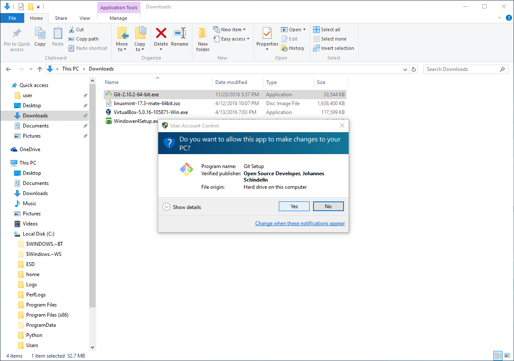
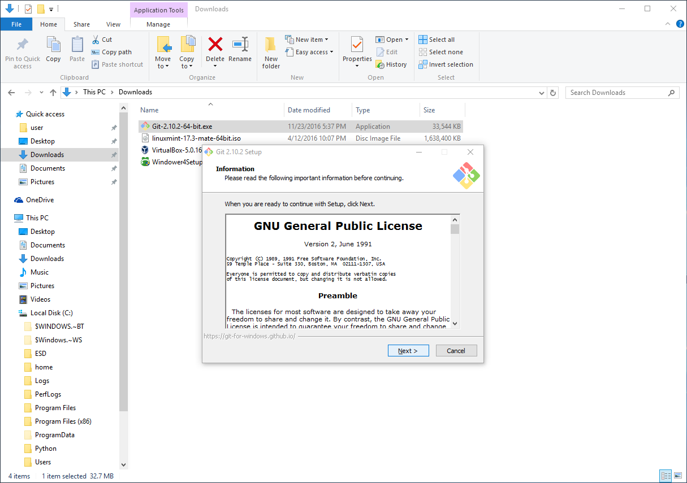
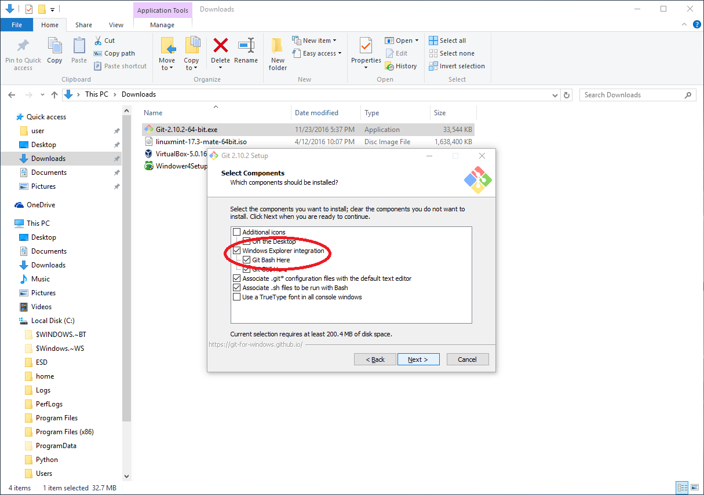
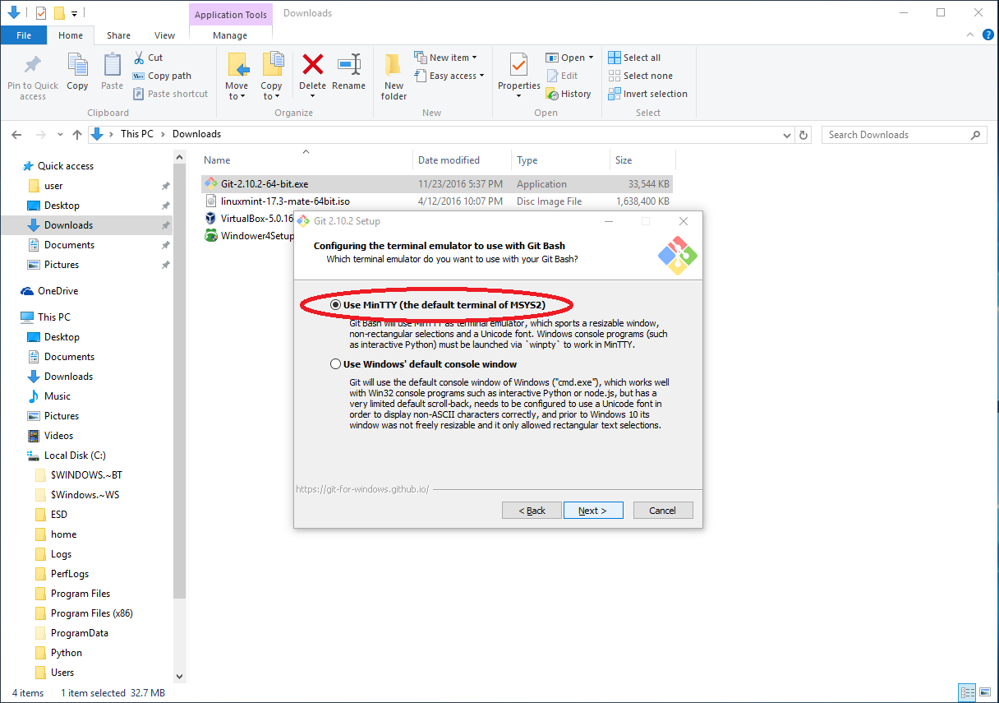
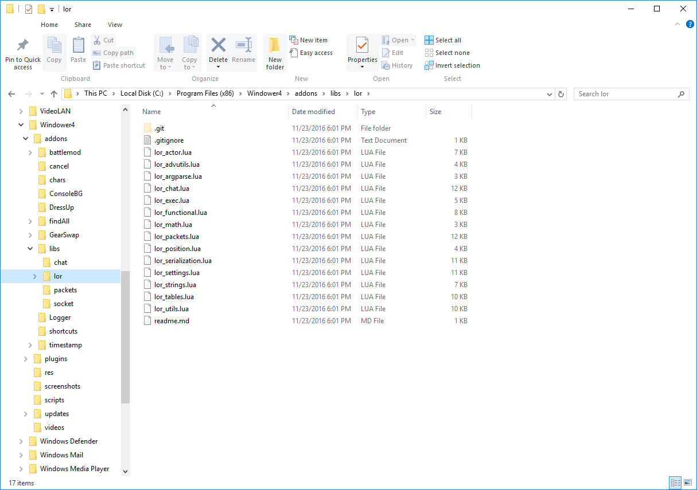

An old version of this tutorial, and others, can be found
here. The basics of installing my addons/GearSwap additions manually (without installing/using Git) should still be valid, but some screenshots are slightly outdated.
- 
Run the installer for Git. Click "Yes" if you get a User Account Control popup.
- 
Click "Next" to accept the license agreement.

The default install location is fine; click "Next".
- 
Make sure the "Windows Explorer integration" and "Git Bash Here" boxes are checked before clicking "Next".

Click "Next".

I suggest selecting "Use Git from Git Bash only", then you can click "Next".
I suggest selecting "Checkout as-is, commit Unix-style line endings", then you can click "Next".
- 
Make sure that "Use MinTTY" is selected, then you can click "Next".

The first two extra options are fine to select, but the third isn't necessary. Click "Install" to continue.

Wait for Git to be installed.

You can uncheck the boxes and click "Finish".
This section is only necessary if you haven't edited your Windower folder permissions to make addon management easier in the past.

Under GearSwap, rename the existing data folder. Cloning the repository won't work if the folder already exists, and this has the added benefit of creating a backup of your current files.
Give your old "data" folder a new name, and press [Enter] to accept it.

Right-click on your GearSwap folder, and click "Git Bash Here" to open a terminal in that folder.

You can find the URL to provide to for each clone operation by navigating to the relevant repository, clicking "Clone or download", then copying the provided URL.

In the terminal, you would type "git clone ", then paste the URL. To save the content to a specific sub-directory, you can provide the name of the subdirectory (it cannot be an existing directory) to target after the URL.
In this case, the full command you should enter:
git clone https://github.com/lorand-ffxi/gearswap.git data
Press [Enter] to execute the command. After it runs, you can type "exit" or close the window with the X as usual.

Inside your Windower folder, navigate to the "addons" folder. Inside that folder, navigate to the "libs" folder, and open a terminal in it (right-click "libs" and select "Git Bash Here").

git clone https://github.com/lorand-ffxi/lor_libs.git lor
- 
Example: The "lor" folder now exists under Windower/addons/libs.

For HealBot, open a terminal in the base "addons" folder.
git clone https://github.com/lorand-ffxi/HealBot.git
Note: In this case, we don't need to provide a specific folder name, because it defaults to HealBot.
As an end-user, the primary reason for you to take the above steps is to make it easier to update my addons in the future.
Instead of needing to go through all of the steps of downloading, extracting, and pasting new files, Git does the heavy lifting of checking to see which files need to be updated.
To update, open the Git Bash terminal in the folder of the addon that you want to update. This is exactly the same as the above procedure, but now, you want to open the terminal inside the sub-directories that were created by the clone operation. For example, instead of opening a terminal in the "GearSwap" directory, you would open it in the "data" directory inside "GearSwap".
In the terminal you opened, enter the following:
git pull
When you press [Enter], it will check the server and update any files that need to be updated. If everything is already up to date, it will say, "Already up-to-date."
After running, you can close the terminal by clicking the X in the corner, or entering "exit"